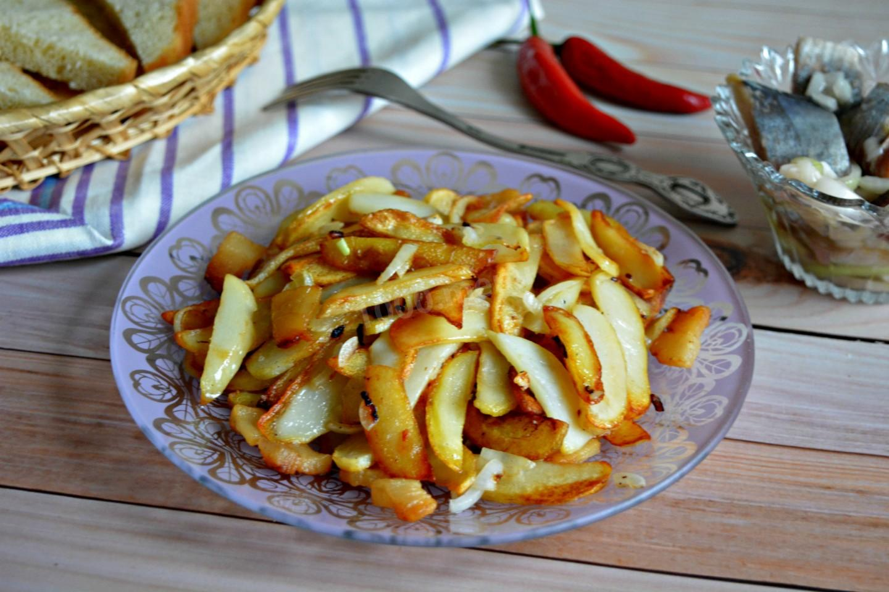

Сочные пельмешки
Калганова Ксения
Изумительный доширак
Калганова Ксения

Великолепная картошка
Калганова ксения
Изысканный бутерброд с колбасой
Калганова ксения
Божественная гречка с маслом
Калганова ксения
Прекрасные макароны с тушенкой
Калганова Ксения
Неповторимая яичница
Калганова Ксения
Чудесные сосиски с кетчупом
Калганова Ксения
Нежнейшее картофельное пюре
Калганова Ксения
Вкуснейшая шаурма (шаверма)
Калганова Ксения
Загрузить еще